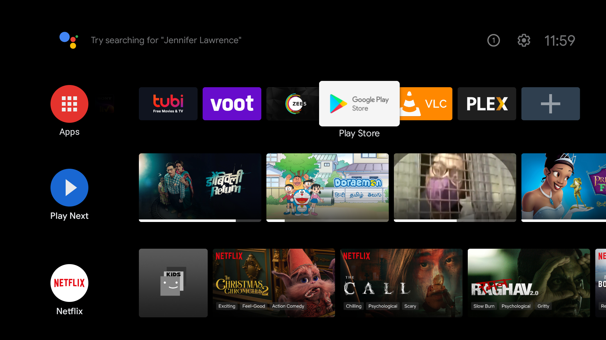
WireGuard app should appear in the results as seen in the image below
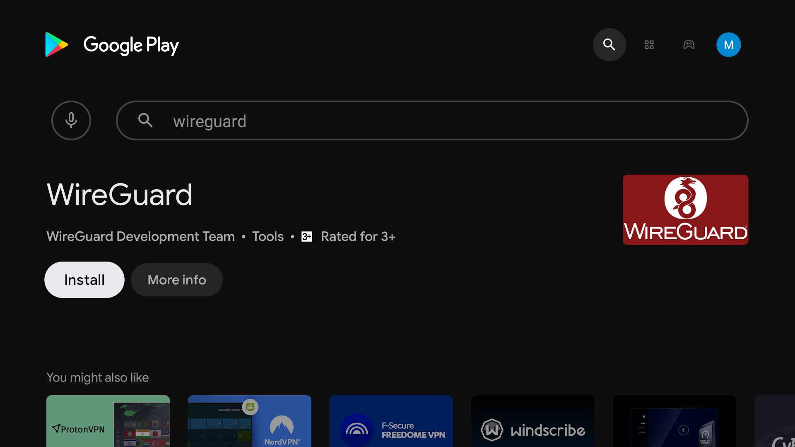
Select and open it to Install. Please wait until WireGuard app is installed on your Android TV.
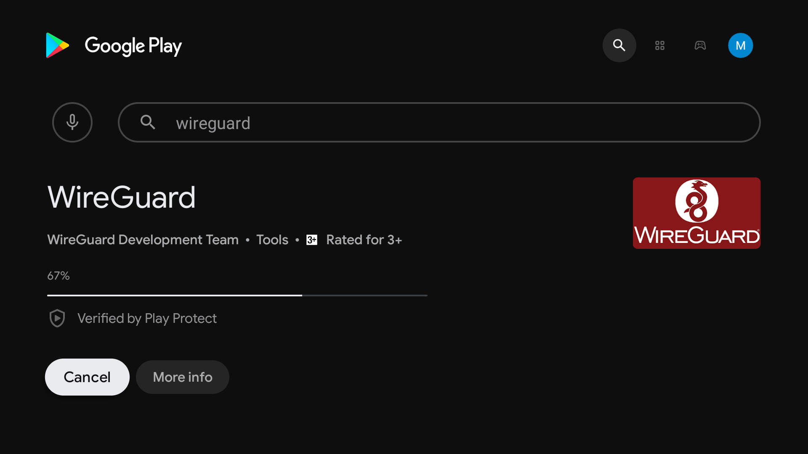
Once installed, Open WireGuard app.
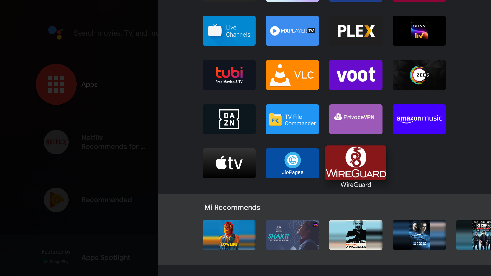
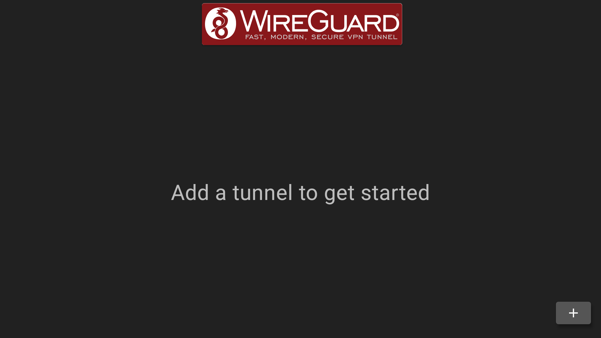
Once selected. You are now required to Allow WireGuard to access your file storage to continue as a one-time procedure.
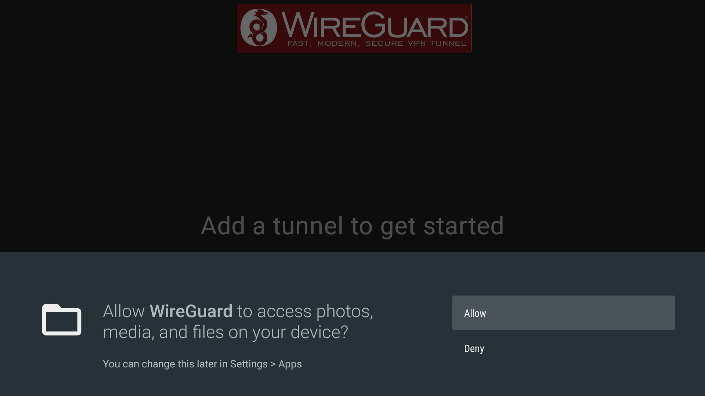
Carefully navigate to folder or directory where you have downloaded your WireGuard configuration file.
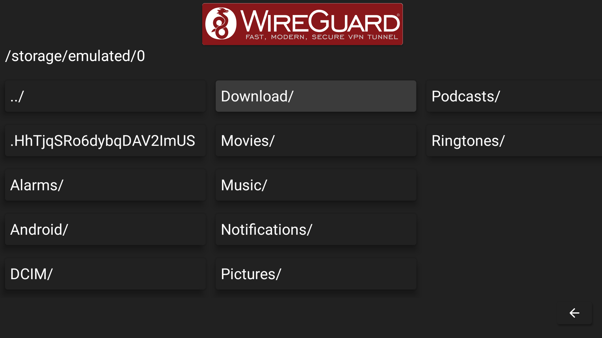
Our WireGuard configuration file US-Netflix.conf is located in Download folder or directory. Select respective .conf file to continue.
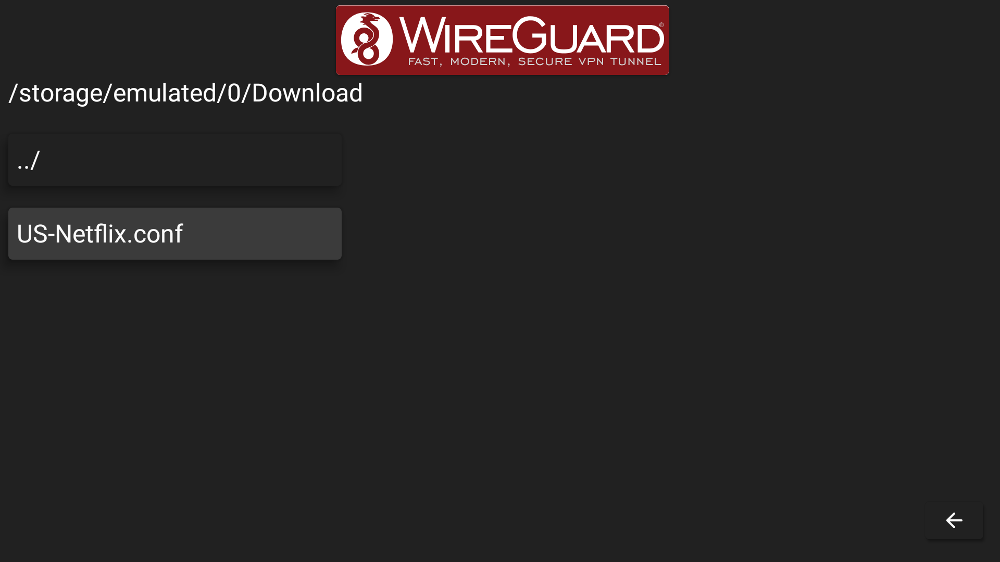
You have now successfully imported a WireGuard configuration file and your Tunnel has been successfully added to the WireGuard interface.
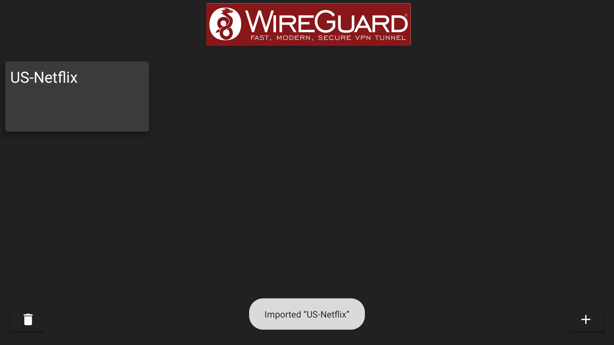
Navigate to Tunnel name, US-Netflix in our case to continue. You are now required to OK your WireGuard connection request to continue.
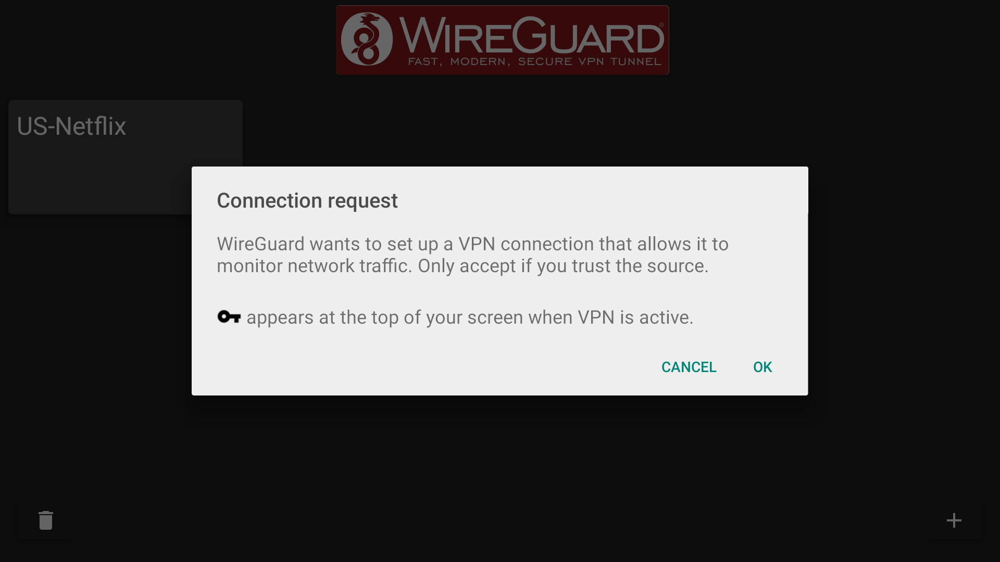
Upon successful connection, Tunnel name now appears in Blue with data transfer figures on-screen. Navigate to a streaming App like Netflix to enjoy your favorite content now!
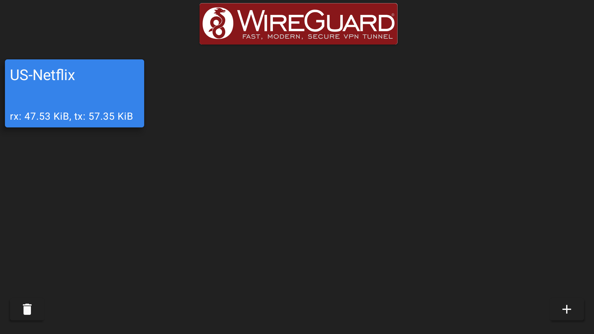
Voila! You have configured WireGuard app on your Android TV correctly.